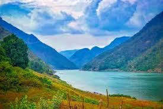
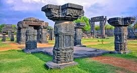
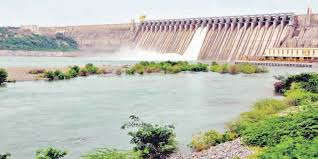
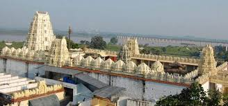
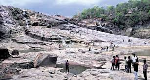

Hyderabad

TA city of contrasts, Hyderabad exudes an old-world charm of its own with the Old City (Charminar side),
Hitech City (Cyberabad) and the other areas lying between the old and the new. The capital and the largest
city of Telanaga, Hyderabad is home to stately mosques and noisy bazaars lined parallelly alongside swanky
new office buildings and malls, and it is these very contrasts – these glimpses into the city’s rich past with
inherent promises of an even better future –that make Hyderabad a city worth visiting.
Papikondalu

Papikondalu mountain range runs along the River Godavari (Western Godavari) and is located in Rajahmundry,
Andhra Pradesh. Papikondalu is a sheer fest to the eyes in terms of its scenic beauty. As the hills become
closer and closer to the visitor, the width of the mighty Godavari becomes narrower. it was initially named as 'Papidi' Kondalu- Paidi in
Telugu means the middle partition of a woman’s hair. The river narrowing, its twists and turns along with the Papi Hills form a breathtaking visual experience.
Warangal

Warangal takes you back to the era of kings and queens with its beautiful historical sites and an impressive
natural beauty with Parkhal Lake being worth checking out. The Warangal city is credited as the fifth largest city in this state. The legends have it that it was known as Oruguallu or
Omtikonda or Ekasilanagaram mainly due to the existence of a huge hillock which seemed to have been carved out entirely off one
stone. Warangal takes you back to the era of kings and queens with its beautiful historical sites.
Nagarjunasagar

Nagarjunasagar is a site of spectacular man-made marvel flanked by equally enchanting panoramic vistas of
lush green surrounding. Lying in the Nalgonda District of Andhra Pradesh, the most popular landmark of the
town is world's tallest masonry dam Nagarjunasagar dam built over Krishna River. With the capacity of irrigating
around 10 acres of land, this modern architectural grandeur is a sight to behold. Other than that, the town
is also renowned for much the talked about the excavation of Buddhist Civilization. An island named as Nagarjuna
Konda lying amidst the man-made lake is a site where the relics of such great significance are preserved.
Bhadrachalam

Bhadrachalam can be a refreshing place to visit with a share of instances from the Ramayana, a glorious palace,
a vibrant river and mystical terrain and surroundings. One of the major attractions of Bhadrachalam is the Sita
Ramachandraswamy temple. One can also visit the Abhaya Anjaneya temple. The majestic River Godavari is found winding
with its vast stretch of sand all throughout the town and is considered to be very holy. It can also be the host to a
number of water sports that makes the river be a delightful experience.
Adilabad

Adilabad is a small town in the state of Telangana that is famous for the beautiful Kunatala waterfalls located
amidst lush forests. Originally known as Edulapuram, this place is for the nature lovers and history buffs. Adilabad
is currently Telangana's second-largest district and the town witnesses various customs and traditions that are a
fusion of Telugu and Marathi culture. Once being the power of centre of various great dynasties including Mauryas,
Chalukyas, Bahmanis and Mughals, Adilabad today is bejewelled with their remarkable relics left behind.